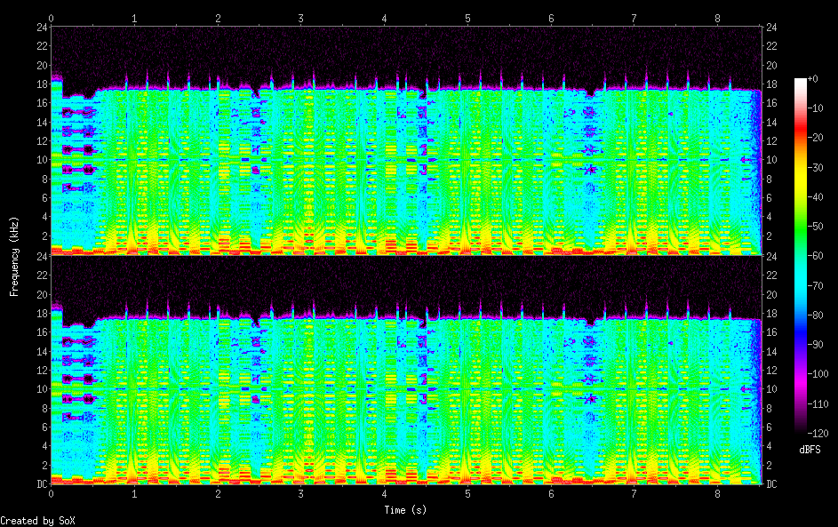

Crushed
/incubations/crushed/crushed.rb
# max-recording-time: 10
with_fx :bitcrusher do
4.times do
use_synth :mod_fm
play 50 + [5, 0].choose, mod_phase: 0.25, release: 1, mod_range: [24, 27, 12].choose
sleep 0.5
use_synth :mod_dsaw
play 50, mod_phase: 0.25, release: 1.5, mod_range: [24, 27].choose, attack: 0.5
sleep 1.5
end
end
{
"samples_read": 818416.0,
"length": 8.525167,
"scaled_by": 2147483647.0,
"maximum_amplitude": 0.772736,
"minimum_amplitude": -0.533905,
"midline_amplitude": 0.119415,
"mean_norm": 0.138771,
"mean_amplitude": -0.000054,
"rms_amplitude": 0.174506,
"maximum_delta": 0.377502,
"minimum_delta": 0.0,
"mean_delta": 0.0081,
"rms_delta": 0.021453,
"rough_frequency": 939.0,
"volume_adjustment": 1.294
}